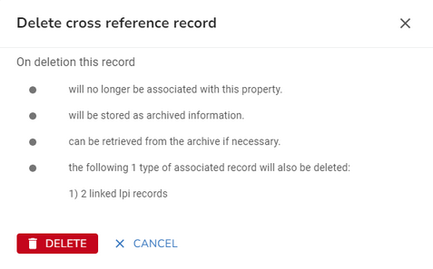
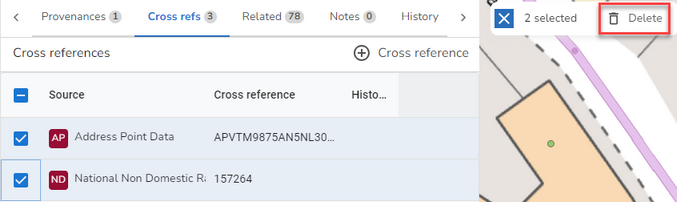
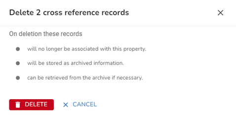

First you need to find the property that you wish to maintain. You can use the Search to search for the property by UPRN or address. Either select the property from the search results or press enter in the search and select the property from the Explorer. The details for the property are displayed in the Property form.
•Select the Cross refs tab
Add an Application Cross Reference
•Select to Add new Cross reference from one of the Cross Reference Actions.
•Change the Cross Reference details as required.
•Once you are happy, click OK to validate your entry.
•Now click Save to update the property.
Edit an Application Cross Reference
•Select the cross reference that you wish to edit.
•Change the Cross Reference details as required.
•When you are happy, click OK to validate your changes.
•Now click Save to update the property.
Delete an Application Cross Reference
Delete a single Cross Reference
•Select the cross reference that you wish to delete.
•Select to Delete Cross reference from one of the Cross Reference Actions.
•You will see a confirmation dialog letting you know what will be deleted if you continue e.g.

•Click  to delete the cross reference and any associated records or click CANCEL to return without deleting.
to delete the cross reference and any associated records or click CANCEL to return without deleting.
•Now click Save to update the property.
Delete multiple Cross References
•Select the Cross references you wish to delete from the list.
•A dialog is displayed showing the number of records you have selected with a delete icon e.g.

•Click the Delete Cross reference records icon.
•You will see a confirmation dialog letting you know what will be deleted if you continue e.g.

•Click  to delete the cross reference and any associated records or click CANCEL to return without deleting.
to delete the cross reference and any associated records or click CANCEL to return without deleting.
•Now click Save to update the property.